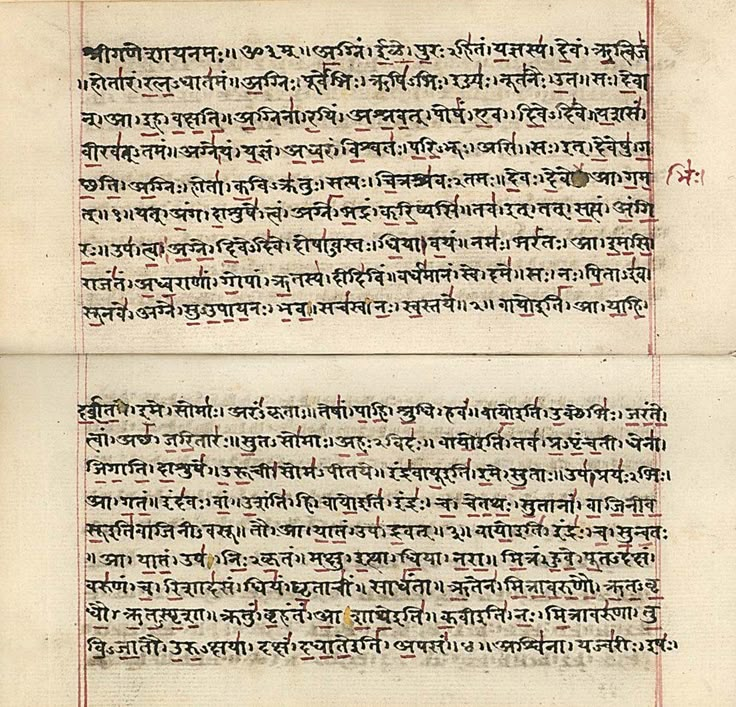
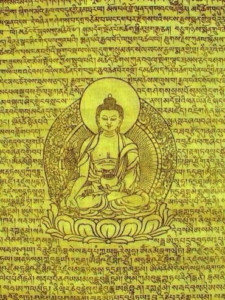
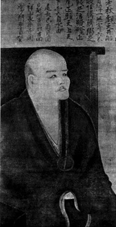
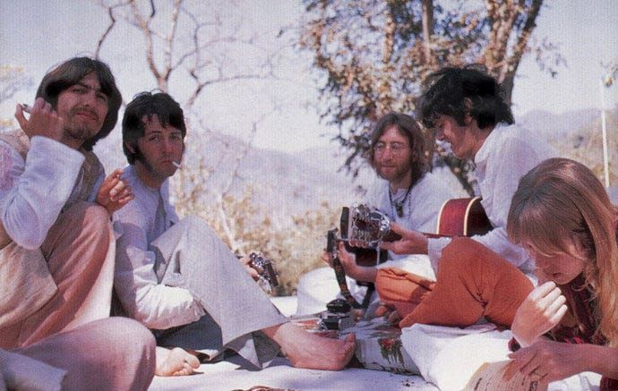
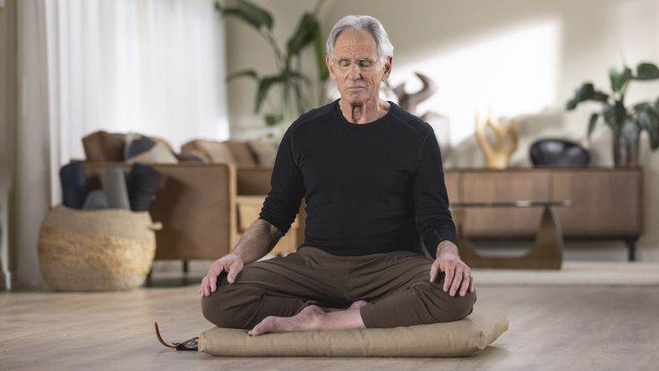

The earliest written mentions of meditation were in ancient India. Those records of meditation practice date to roughly 1500 BCE, when the Vedas, ancient Indian texts, are believed to refer to meditation practices, probably mantra or gazing meditation.

Meditation becomes central to Buddhism. The Buddha taught meditation as a path to awareness, and it spread across Asia. Buddhist styles like Vipassana, Samatha, Loving-Kindness and Walking Meditation are now probably the most widely practiced forms in the West.

Zen takes root in Japan. A Japanese monk named Dōgen traveled to China to study Chan Buddhism, a tradition that grew out of meditation practices from India. When he returned to Japan, he opened a meditation hall and taught zazen, which means "just sitting." It became the heart of Zen and inspired generations of monks and nuns.

The Beatles go to India. In February 1968, the Beatles traveled to Rishikesh in northern India for a Transcendental Meditation course at Maharishi Mahesh Yogi's ashram. Their connection with the Maharishi sparked huge Western interest in meditation, yoga, and Indian culture.

Jon Kabat-Zinn developed Mindfulness-Based Stress Reduction (MBSR) and first taught it at the University of Massachusetts in 1979. As research supporting it grew, interest in mindfulness spread from healthcare into education, business, and beyond.

Apps like Headspace and Calm brought guided meditation to phones, making it easy for anyone to try. Today, meditation is a billion-dollar industry, but its roots are thousands of years old.